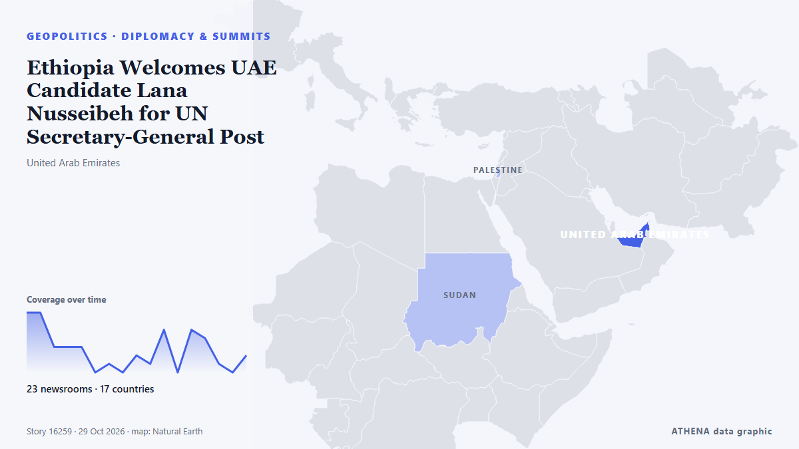

Afrique subsaharienne
Afrique subsaharienne : les derniers événements pays par pays, avec risque, sources et pays selon ATHENA.

GéopolitiqueEthiopia Welcomes UAE Candidate Lana Nusseibeh for UN Secretary-General Post
UAE Minister of State Lana Nusseibeh has entered the race to become the next UN secretary general. de The National
ANC gets 30% in South Africa’s election, partial results show
Gauteng and KwaZulu-Natal account for 13 of the 20 murders involving political figures and supporters recorded during the election period, as police investigate 139 election-related criminal cases… de IOL
US, EU and 30 countries warn of famine risk in Sudan, call for aid
Countries also urge Sudan's warring parties to 'lift all impediments on humanitarian assistance'. de Al Jazeera English
Algeria to send troops to Niger in first foreign deployment since 1973
ALGIERS, Oct 25 - Algeria's parliament approved a resolution on Sunday authorising the deployment of army units to Niger, a parliamentary statement said, in what would mark Algeria's first foreign… de The Straits Times
Borr Drilling Prospector 5 Rig Incident Update
Borr Drilling Limited provides an update on the Prospector 5 incident offshore Gabon, first announced by the Company on October. de Cyprus Shipping News
Dakar Rally 2027 will not be held in Saudi Arabia, organisers say
The 2027 edition of the Dakar Rally has been moved out of Saudi Arabia due to security concerns, organisers Amaury Sport Organisation said on Sunday. de Cyprus Mail
Ethiopia clashes push 50,000 to flee to Kenya
The outbreak of fighting between rival forces in southern Ethiopia last week has led some 50,000 people to seek refuge in neighbouring Kenya, the United Nations said Wednesday, citing local… de France 24 English